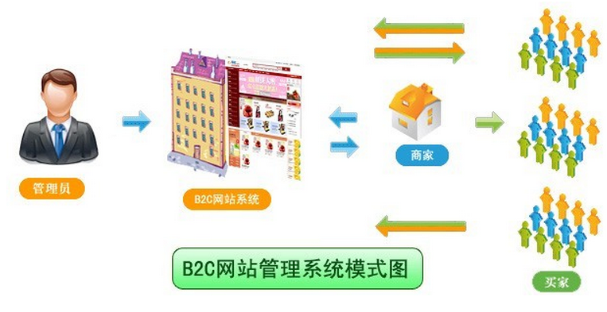

在网购日渐繁盛的今天，传统线下门店和代理分销越发显示出其弊端。此种情况下，进入互联网市场是最好的选择。入驻第三方平台成本太高，无法掌握自己的流量，所以搭建自己的分销平台成为众多企业的首选。搭建B2C分销商城系统需要考虑哪些因素？B2C分销系统能实现哪些功能？
搭建B2C分销商城系统需要考虑哪些因素？
一、角色分析
B2C分销模式是商家对顾客的一种模式，这种模式需具备商家和用户两个角色。
二、需求分析
商家的需求：
1、可以管理商品（商品的添加、删除、更改等）；
2、可以管理用户（包括查看用户的信息、删除用户等等）；
3、可以浏览到全部的订单（方便自己安排发货）；
4、可以发布促销、打折等信息；
5、可以设置积分规则、分销商门槛、等级以及佣金分配比例。
用户的需求：
1、可以快速的找到自己需要的商品；
2、可以一次性结算自己购买的多个商品；
3、拥有多种支付方式，方便自己支付；
4、可以看到自己的订单和物流信息；
5、有促销、打折以及积分等优惠。
6、可以申请成为分销商、查看佣金收入明细、下级分销商等级等。
有需要的朋友联系我们微信：kjwenlc , q：3328752804

三、功能分析
商家管理后台：
1、登录：正常登录、商品管理、查看商品、修改商品信息、添加新商品和商品上下架。
2、订单管理：查看订单、修改订单和删除订单。
3、会员管理：查看会员信息、修改会员信息和删除会员。
4、分销商管理：设置分销商门槛、等级、佣金分配比例等。
用户前台功能：
1、注册：要求用户在注册时，用户名必须是6-12位字符组成的；密码也是要数字+英文组合而成的6-12个字符；
2、登陆：让用户正常登陆后，可以管理自己的个人信息、登陆密码等；
3、浏览商品；可以在主页上浏览商品、查看某件商品的详细信息以及将商品添加到购物车上；
4、结算：当用户将商品添加都购物车上时，可以对商品的一些信息进行修改，甚至是删除购物车上的商品，最终实现结算；
5、查看订单详情：根据时间的排序查看到自己所购买的商品。
6、查看佣金收入明细：可查看个人佣金收入详情。